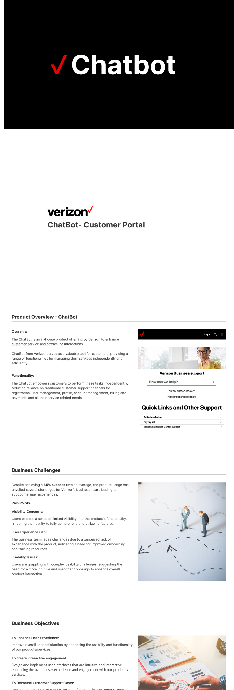
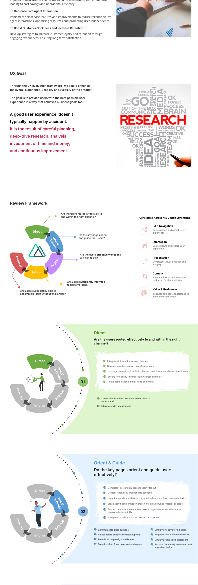
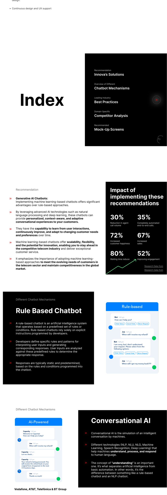
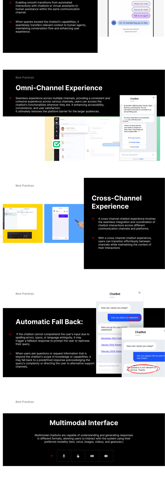
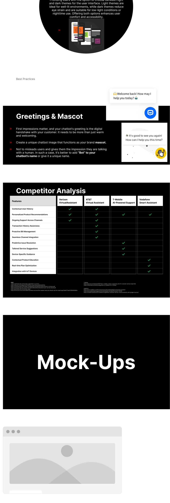
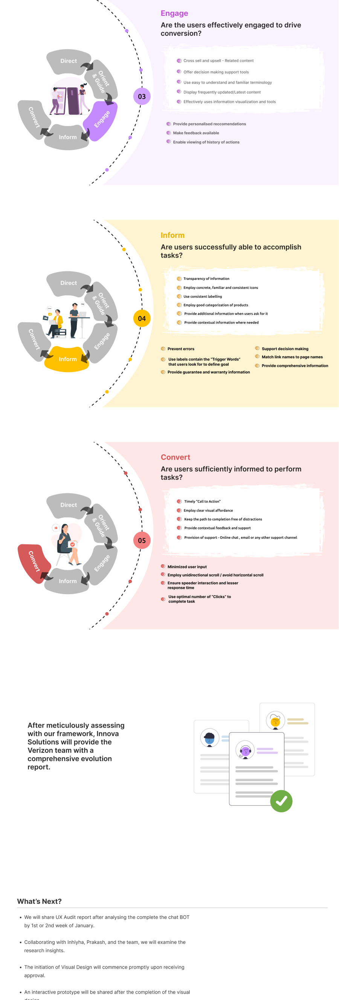
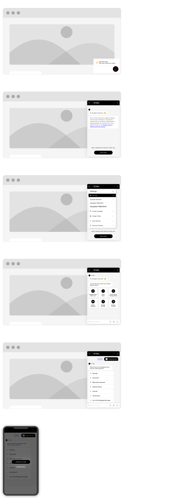
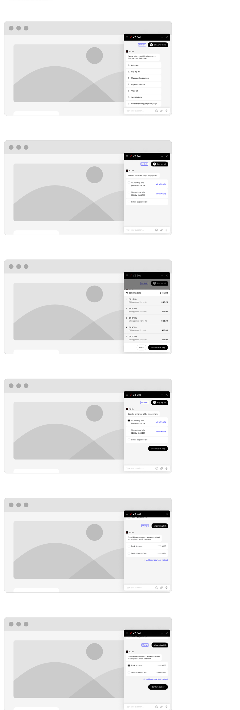
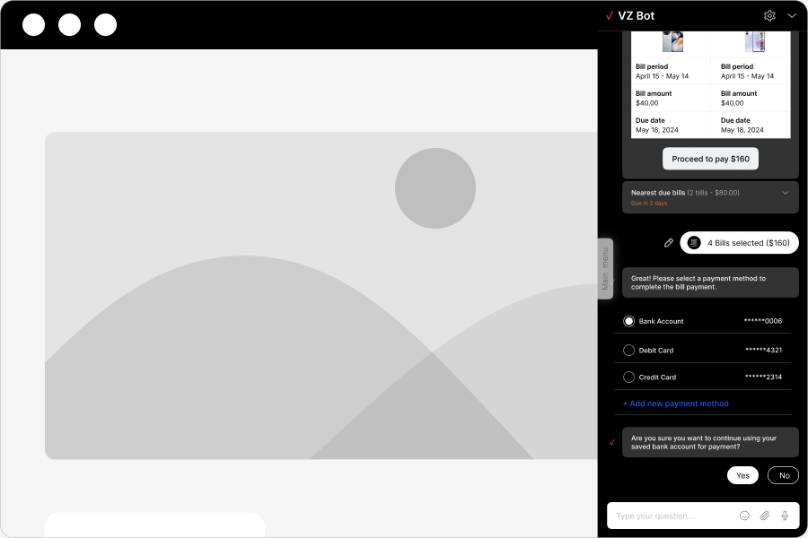

A 65% success rate looked fine on a dashboard. The full trace of the audit that showed why the business team still didn't trust it, and the redesign that followed it into production.

65% success is a number a dashboard is happy with and a business team still complains about. I treated that gap itself as the research question, rather than assuming the chatbot was simply "fine" because the topline number looked acceptable.
Pattern → Insight: visibility, internal readiness, and usability friction all point at the same root — the chatbot was evaluated on task completion, never on comprehension or confidence. Read against the internal team's own framing — "customers don't know what this bot can actually help with," said with the defensiveness of a team whose dashboard says the product works — the pattern held: nobody had ever measured comprehension or confidence, only completion.
No structured evaluation existed → need a lens broader than task completion → opportunity: a named, criteria-based framework → solution: Direct, Orient & Guide, Engage, Inform, Connect.

Before proposing what Verizon's chatbot should become, I mapped what a chatbot even is across the spectrum — rule-based versus conversational AI. A rule-based chatbot operates on predefined rules with static responses; conversational AI simulates genuine understanding via NLP, NLU, NLG, and deep learning. That distinction set the ceiling on what "Inform" and "Connect" could realistically achieve without a platform-level change, not just a UI one.

Industry best practices were brought in as design principles, not decoration: omni-channel and cross-channel continuity, automatic fallback so a misunderstood query never dead-ends, a multimodal interface, and a deliberate greeting/mascot design.

Verizon's own VirtualAssistant was benchmarked directly against AT&T, T-Mobile, and Vodafone across eleven concrete capabilities — from contextual user history to predictive issue resolution to IoT device integration — sourced and cited rather than asserted from memory.

Scored against the framework, the 65% success rate stopped looking like a passing grade. It looked like a product that could technically resolve two out of three interactions while still leaving users unsure what it could do, unclear on next steps, and unable to self-serve with confidence — exactly the gap the business team had been describing anecdotally, now backed by a structured evaluation instead of a feeling.

The entry point leads with a popular-topics grid — upgrade order, latest deals, check status, billing and payments, manage plan, manage account — instead of an empty text box asking the user to guess what the bot can help with. A visible settings panel and an upfront, honest disclosure that the user is talking to a digital assistant address the "Direct" and "Inform" gaps directly.

Billing and payments — one of the highest-stakes tasks — got mapped as a full conversational flow: select a bill from pending or overdue, see it broken out with amounts, choose a saved payment method or add a new one, and confirm. Every step keeps the user informed of exactly where they are, which is precisely what "Connect" was measuring for.

The popular-topics entry point and the bill-pay conversational flow from Section 05 went into visual design and were built into the live Business Support chatbot — closing the "Inform" and "Connect" gaps the audit identified, rather than leaving them as a report on a shelf.
| Metric | Result |
|---|---|
| Baseline success rate (existing product) | 65% |
| Competitor capability gaps identified | Sourced, cited comparison across 11 capabilities |
| Redesign status | Designed and shipped to production |
| Post-launch success rate / CSAT | Shipped — specific post-launch metrics not tracked for this case study |
I don't have a post-launch number to report here, and I'd rather say that plainly than invent one. What I can stand behind is the framework, the findings, and the fact that they're what the shipped redesign was actually built on — not a report that ended at recommendation.
The shipped redesign itself, in Figma — the popular-topics entry point and the full bill-pay conversational flow from Sections 05 and 06, at source resolution.

View the design file in Figma →
The through-line: the most useful thing I delivered wasn't a mockup. It was a framework rigorous enough that Verizon's team built from it directly — and one they can reuse on the next feature.